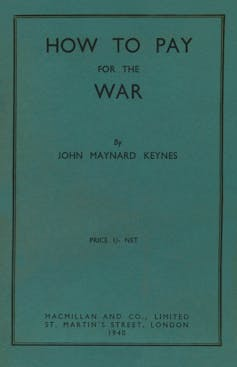
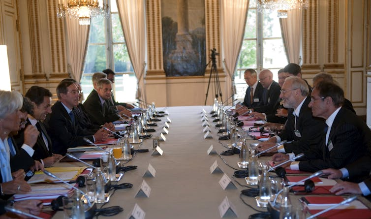
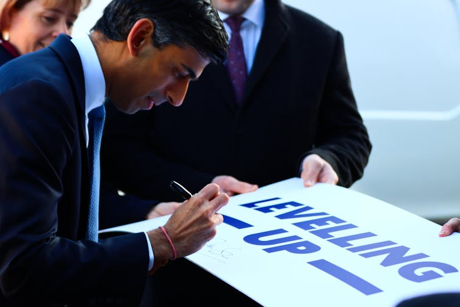
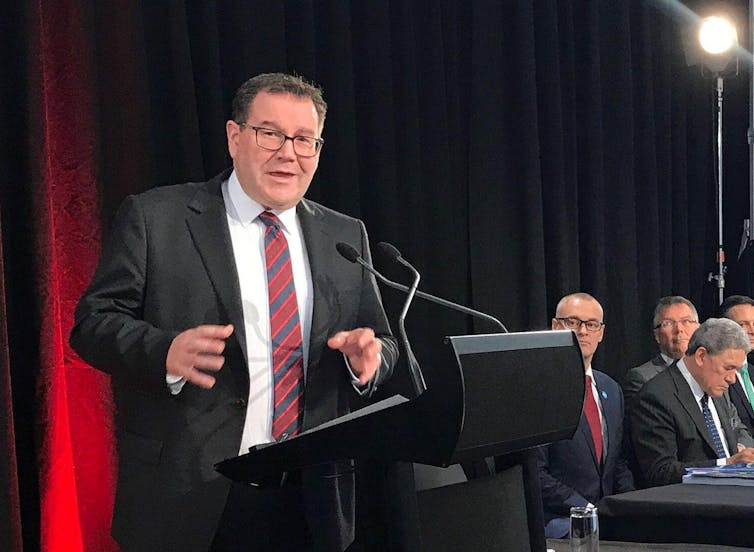
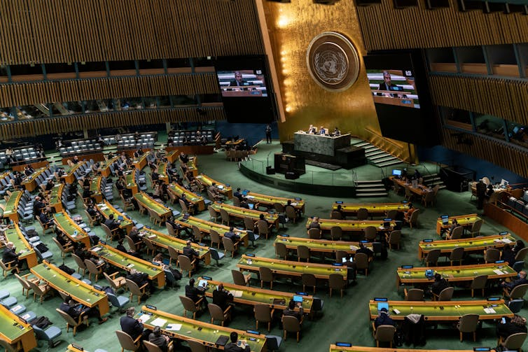

Robert F Kennedy on the presidential campaign trail in 1968. Alamy
Robert F Kennedy on the presidential campaign trail in 1968. Alamy
Beyond GDP: changing how we measure progress is key to tackling a world in crisis – three leading experts
Published: August 18, 2022 4.10pm BST
It’s an odd quirk of history that, on the first day of his ill-fated presidential campaign in March 1968, Robert F Kennedy chose to talk to his audience about the limitations of gross domestic product* (GDP) – the world’s headline indicator of economic progress.
It seems stranger still that, despite the power of that iconic speech, growth in GDPremains to this day the predominant measure of progress across the world. Economic success is measured by it. Government policy is assessed by it. Political survival hangs on it.
Kennedy’s speech inspired a host of critiques. It has been quoted by presidents, prime ministers and Nobel laureates. Yet GDP itself has survived until now, more-or-less unscathed. But amid ever-louder concerns about the failure of national economies to tackle the multiple threats posed by climate change, spiralling energy costs, insecure employment and widening levels of inequality, the need to define and measure progress in a different way now looks as unarguable as it is urgent.
The goods, the bads, and the missing
In simple terms, GDP is a measure of the size of a country’s economy: how much is produced, how much is earned, and how much is spent on goods and services across the nation. The monetary total, whether in dollars or euros, yuan or yen, is then adjusted for any general increase in prices to give a measure of “real” economic growth over time. When governments adopt policies to pursue economic growth, this is how those policies are evaluated.
Since 1953, GDP has been the headline measure in a complex system of national accounts overseen by the United Nations. Developed during the second world war, these accounts were motivated in part by the need to determine how much governments could afford to spend on the war effort.
But in measuring the monetary value of economic activity, GDP can incorporate many of the “bads” that detract from our quality of life. War, pollution, crime, prostitution, traffic congestion, disasters like wildfires and the destruction of nature – all can have a positive impact on GDP. Yet they cannot really be construed as components of economic success.
At the same time, there are numerous aspects of our lives that simply go missing from this conventional account. The inequality in our societies. The contributions from unpaid work. The labour of those who care for the young and the elderly at home or in the community. The depletion of natural resources or biodiversity. And the value of data and many digital services.
What lies outside the market, including public services funded out of taxation, remains unmeasured in a metric of monetary exchange. Kennedy was blunt: “[GDP] measures everything, in short, except that which makes life worthwhile.”
It’s a sentiment that has resonance half a century later. In a striking encounter during the Brexit debate, a UK academic was trying to convey to a public meeting the dangers of leaving the EU. The impact on GDP would dwarf any savings from the UK’s contributions to the EU budget, he told the audience. “That’s your bloody GDP!” shouted a woman in the crowd. “It’s not ours.”
This sense of an indicator out of touch with reality may be one of the reasons there is momentum for reform. When GDP conceals crucial differences between the richest and the poorest in society, it inevitably says little about the prospects for ordinary people.
But there are other reasons too for an emerging change of heart. The pursuit of GDP growth as a policy goal, and the impact that has on government, business and personal decision-making, has accompanied increasing devastation of the natural world, a loss of forests and habitats, the destabilisation of the climate, and near-meltdowns of the world’s financial markets. At the same time, GDP has become a poor measure of the technological transformation of society.
Its tenacity as a measure of progress, despite these well-known limitations, arises from factors which are on the one hand technocratic, and on the other sociological. As the headline measure in a sophisticated system of national accounts, GDP has a technocratic convenience and analytical elegance that remains unsurpassed by many alternative measures. Its authority arises from its ability to be simultaneously a measure of production output, consumption expenditure and income in the economy.
Read more: GDP numbers are not what they seem: how they boost US and UK at expense of developing countries
Despite this complex framework, it also offers the deceptive simplicity of a single headline figure which appears to be directly comparable from year to year and across nations, based on the simple (if inadequate) idea that more economic activity necessarily leads to a better life.
However, the combined technical authority and political usefulness of this idea has led to “path dependence” and forms of social lock-in that are difficult to address without significant effort. Think of switching to an alternative as being like switching from driving on the left to the right-hand side of the road.
Yet what we measure matters. And while we’re busy looking in the wrong direction, as Kennedy pointed out, bad things can happen. Kennedy’s campaign – and his critique of GDP – was cut cruelly short on June 5 1968, when he was fatally wounded by an assassin’s bullet. More than half a century later, his call for reform of how we assess progress (or its absence) has never been stronger.
The trouble with GDP: historical flaws
The way societies have understood and measured progress has changed considerably over the centuries. Measurement of “the economy” as a whole is a relatively modern, 20th-century concept, beginning with efforts by statisticians and economists such as Colin Clark and Simon Kuznets in the 1920s and 1930s to understand the impact of financial crisis and depression.
Kuznets, now best known for his curve describing the relationship between GDP and income inequality, was particularly concerned to develop a measure of economic welfare rather than just activity. For example, he argued for omitting expenditures that were unwelcome necessities rather than services or goods consumers actively wanted – such as defence spending.

John Maynard Keynes’ influential work. Alamy
However, the second world war overtook and absorbed these earlier notions of a single measure of economic welfare, resulting in what first became modern gross national product (GNP), and then GDP. The imperative – set out on the Allied side by John Maynard Keynes in his 1940 pamphlet How to Pay for the War – was measuring productive capacity, and the reduction in consumption required to have enough resources to support the military effort. Economic welfare was a peacetime concern.
Post-war, unsurprisingly, American and British economists such as Milton Gilbert, James Meade and Richard Stone took the lead in codifying these statistical definitions through the UN – and its process for agreeing and formalising definitions in the system of national accounts (SNA) is still in place today. However, since at least the 1940s, some important inadequacies of both the SNA and GDP have been widely known and debated.
Indeed, as long ago as 1934, Margaret Reid published her book Economics of Household Production, which pointed out the need to include unpaid work in the home when thinking about economically useful activity.
The question of whether and how to measure the household and informal sectors was debated during the 1950s – particularly as this makes up a larger share of activity in low-income countries – but was omitted until some countries, including the UK, started to create household satellite accounts around 2000. Omitting unpaid work meant, for instance, that the UK’s increased productivity growth between the 1960s and 1980s was then overstated, because it in part reflected the inclusion of many more women in paid work whose contributions had previously been invisible to the national GDP metric.
Another longstanding and widely understood failure of GDP is not including environmental externalities and the depletion of natural capital. The metric takes incomplete account of many activities that do not have market prices, and ignores the additional social costs of pollution, greenhouse gas emissions and similar outputs associated with economic activities.
Read more: An obsession with economic growth will not make the best use of natural assets
What’s more, the depletion or loss of assets such as natural resources (or indeed buildings and infrastructure lost in disasters) boosts GDP in the short term because these resources are used in economic activities, or because there is a surge in construction after a disaster. Yet the long-term opportunity costs are never counted. This massive shortcoming was widely discussed at the time of landmark publications such as the 1972 Limits to Growth report from the Club of Rome, and the 1987 Brundtland Report from the World Commission on Environment and Development.
As with household and informal activity, there has been recent progress in accounting for nature, with the development of the System of Environmental Economic Accounting (SEEA) and publication of regular (but separate) statistics on natural capital in a number of countries. The UK has again been a pioneer in this area, while the US recently announced it would start following this approach too.
New challenges to the value of GDP
Other, perhaps less obvious failings of GDP have become more prominent recently. Digitisation of the economy has transformed the way many people spend their days in work and leisure, and the way many businesses operate, yet these transformations are not apparent in official statistics.
Measuring innovation has always been tricky, because new goods or improved quality need to be incorporated into observable prices and quantities – and what is the metric for a unit of software or management consultancy? But it is harder now because many digital services are “free” at point of use, or have the features of public goods in that many people can use them at the same time, or are intangible. For example, data is without doubt improving the productivity of companies that know how to use it to improve their services and produce goods more effectively – but how should a dataset’s value, or potential value, to society (as opposed to a big tech company) be estimated?
Recent work looking at the price of telecommunications services in the UK has estimated that output growth in this sector since 2010 has ranged anywhere from about 0% to 90%, depending on how the price index used to convert market prices to real (inflation-adjusted) prices takes account of the economic value of our rapidly growing use of data. Similarly, it is not obvious how to incorporate advertising-funded “free” search, crypto currencies and NFTs in the measurement framework.
Street artist Banksy’s temporary showroom critiquing global society in south London, October 2019. Shutterstock
A key limitation of GDP, particularly in terms of its use as an indicator of social progress, is that it offers no systematic account of the distribution of incomes. It is entirely possible for average or aggregate GDP to be rising, even as a significant proportion of the population find themselves worse off.
Ordinary incomes have stagnated or fallen in recent decades even as the richest in society have become wealthier. In the US, for example, Thomas Piketty and his colleagues have shown that in the period between 1980 and 2016, the top 0.001% of society saw their incomes grow by an average of 6% per year. Income for the poorest 5% of society fell in real terms.
Given these many issues, it might seem surprising that the debate about “Beyond GDP” is only now – possibly – turning into actions to change the official statistical framework. But paradoxically, one hurdle has been the proliferation of alternative progress metrics.
Read more: How poorer citizens pay the price of economic change in the UK
Whether these are single indices that combine a number of different indicators or dashboards showcasing a wide range of metrics, they have been ad hoc and too varied to build consensus around a new global way of measuring progress. Few of them provide an economic framework for consideration of trade-offs between the separate indicators, or guidance as to how to interpret indicators moving in different directions. There is a breadth of information but as a call to action, this cannot compete against the clarity of a single GDP statistic.
Statistical measurement is like a technical standard such as voltage in electricity networks or the Highway Code’s rules of the road: a shared standard or definition is essential. While an overwhelming majority might agree on the need to go beyond GDP, there also needs to be enough agreement about what “beyond” actually involves before meaningful progress on how we measure progress can be made.
Change behaviour, not just what we measure
There are many visions to supplant GDP growth as the dominant definition of progress and better lives. In the wake of the COVID pandemic, it has been reported that most people want a fairer, more sustainable future.
Politicians can make it sound straightforward. Writing in 2009, the then-French president Nicolas Sarkozy explained he had convened a commission – led by internationally acclaimed economists Amartya Sen, Joseph Stiglitz and Jean-Paul Fitoussi – on the measurement of economic performance and social progress on the basis of a firm belief: that we will not change our behaviour “unless we change the ways we measure our economic performance”.
Sarkozy also committed to encouraging other countries and international organisations to follow the example of France in implementing his commission’s recommendations for a suite of measures beyond GDP. The ambition was no less than the construction of a new global economic, social and environmental order.

President Nicolas Sarkozy (third left) and economist Joseph Stiglitz (second right) at a meeting of the Commission on the Measurement of Economic Performance and Social Progess in Paris, September 2009. EPA/Philippe Wojazer
In 2010, the recently-elected UK prime minister, David Cameron, launched a programme to implement the Sarkozy commission’s recommendations in the UK. He described this as starting to measure progress as a country “not just by how our economy is growing, but by how our lives are improving – not just by our standard of living, but by our quality of life”.
Once again, the emphasis was on measurement (how far have we got?) rather than behaviour change (what should people do differently?). The implication is that changing what we measure necessarily leads to different behaviours – but the relationship is not that simple. Measures and measurers exist in political and social spheres, not as absolute facts and neutral agents to be accepted by all.
This should not dissuade statisticians from developing new measures, but it should prompt them to engage with all who might be affected – not just those in public policy, commerce or industry. The point after all is to change behaviour, not just to change the measures.
Economists are increasingly adopting complex systems thinking, including both social and psychological understandings of human behaviour. For example, Jonathan Michie has pointed to ethical and cultural values, as well as public policy and the market economy, as the big influences on behaviour. Katharina Lima di Miranda and Dennis Snower have highlighted social solidarity, individual agency and concern for the environment alongside the “traditional” economic incentives captured by GDP.
GDP alternatives in practice
Since Kennedy’s 1968 critique, there have been numerous initiatives to replace, augment or complement GDP over the years. Many dozens of indicators have been devised and implemented at local, national and international scales.
Some aim to account more directly for subjective wellbeing, for example by measuring self-reported life satisfaction or “happiness”. Some hope to reflect more accurately the state of our natural or social assets by developing adjusted monetary and non-monetary measures of “inclusive wealth” (including a team at the University of Cambridge led by this article’s co-author Diane Coyle). The UK government has accepted this as a meaningful approach to measurement in several recent policy documents, including its Levelling Up white paper.

Former chancellor Rishi Sunak during the government’s Levelling Up strategy launch. Matthew Bridger/Alamy
There are two fundamental arguments for a wealth-based approach:
- It embeds consideration for sustainability in the valuing of all assets: their value today depends on the entire future flow of services they make available. This is exactly why stockmarket prices can fall or rise suddenly, when expectations about the future change. Similarly, the prices at which assets such as natural resources or the climate are valued are not just market prices; the true “accounting prices” include social costs and externalities.
- It also introduces several dimensions of progress, and flags up the correlations between them. Inclusive wealth includes produced, natural and human capital, and also intangible and social or organisational capital. Using a comprehensive wealth balance sheet to inform decisions could contribute to making better use of resources – for example, by considering the close links between sustaining natural assets and the social and human capital context of people living in areas where those assets are under threat.
Other initiatives aim to capture the multi-dimensional nature of social progress by compiling a dashboard of indicators – often measured in non-monetary terms – each of which attempts to track some aspect of what matters to society.
New Zealand’s Living Standards Framework is the best-known example of this dashboard approach. Dating back to a 1988 Royal Commission on Social Policy and developed over more than a decade within the New Zealand Treasury, this framework was precipitated by the need to do something about the discrepancy between what GDP can reflect and the ultimate aim of the Treasury: to make life better for people in New Zealand.
The NZ Treasury now uses it to allocate fiscal budgets in a manner consistent with the identified needs of the country in relation to social and environmental progress. The relevance to combating climate change is particularly clear: if government spending and investment are focused on narrow measures of economic output, there is every possibility that the deep decarbonisation needed to achieve a just transition to a net zero carbon economy will be impossible. Equally, by identifying areas of society with declining wellbeing, such as children’s mental health, it becomes possible to allocate Treasury resources directly to alleviate the problem.

New Zealand’s finance minister Grant Robertson introduces the government’s ‘wellbeing budget’, May 2019. Alamy
The UK’s Measuring National Wellbeing (MNW) programme, directed by Paul Allin (a co-author of this article), was launched in November 2010 as part of a government-led drive to place greater emphasis on wellbeing in national life and business. Much of the emphasis was on the subjective personal wellbeing measures that the UK’s Office for National Statistics (ONS) continues to collect and publish, and which appear to be increasingly taken up as policy goals (driven in part by the What Works Centre for Wellbeing).
The MNW team was also charged with addressing the full “beyond GDP” agenda, and undertook a large consultation and engagement exercise to find out what matters to people in the UK. This provided the basis for a set of indicatorscovering ten broad areas which are updated by the ONS from time to time. While these indicators continue to be published, there is no evidence that they are being used to supplement GDP as the UK’s measure of progress.
Accounting for inequality within a single aggregate index is obviously tricky. But several solutions to this problem exist. One of them, advocated by the Sen-Stiglitz-Fitoussi commission, is to report median rather than mean (or average) values when calculating GDP per head.
Another fascinating possibility is to adjust the aggregate measure using a welfare-based index of inequality, such as the one devised by the late Tony Atkinson. An exercise using the Atkinson index carried out by Tim Jackson, also a co-author of this article, calculated that the welfare loss associated with inequality in the UK in 2016 amounted to almost £240 billion – around twice the annual budget of the NHS at that time.
Read more: The search for an alternative to GDP to measure a nation's progress – the New Zealand experience
Among the most ambitious attempts to create a single alternative to GDP is a measure which has become known as the Genuine Progress Indicator (GPI). Proposed initially by economist Herman Daly and theologian John Cobb, GPI attempts to adjust GDP for a range of factors – environmental, social and financial – which are not sufficiently well reflected in GDP itself.
GPI has been used as a progress indicator in the US state of Maryland since 2015. Indeed, a bill introduced to US Congress in July 2021 would, if enacted, require the Department of Commerce to publish a US GPI, and to “use both the indicator and GDP for budgetary reporting and economic forecasting”. GPI is also used in Atlantic Canada, where the process of building and publishing the index forms part of this community’s approach to its development.
A potential gamechanger?
In 2021, the UN secretary-general António Guterres concluded his Our Common Agenda report with a call for action. “We must urgently find measures of progress that complement GDP, as we were tasked to do by 2030 in target 17.19 of the Sustainable Development Goals.” He repeated this demand in his priorities for 2022 speech to the UN General Assembly.
Guterres called for a process “to bring together member states, international financial institutions and statistical, science and policy experts to identify a complement or complements to GDP that will measure inclusive and sustainable growth and prosperity, building on the work of the Statistical Commission”.

The UN’s António Guterres called for new visions of progress in his priorities for 2022 speech to the UN General Assembly. Alamy
The first manual explaining the UN’s system of national accounts was published in 1953. It has since been through five revisions (the last in 2008) designed to catch up with developments in the economy and financial markets, as well as to meet user needs across the world for a wider spread of information.
The next SNA revision is currently in development, led by the UN Statistics Division and mainly involving national statistical offices, other statistical expertsand institutional stakeholders such as the IMF, World Bank and Eurostat.
But unlike the UN’s COP processes relating to climate change and, to a lesser extent, biodiversity, there has, to date, been little wider engagement with interested parties – from business leaders and political parties to civil society, non-governmental organisations and the general public.
As the British science writer Ehsan Masood has observed, this revision process is happening below the radar of most people who are not currently users of national accounts. And this means many very useful ideas that could be being fed in are going unheard by those who will ultimately make decisions about how nations measure their progress in the future.
Read more: Why UK's 'treasured free-market economy' will not achieve net zero
The essence of sustainable development was captured in the 1987 Brundtland Report: “To contribute to the welfare and wellbeing of the current generation, without compromising the potential of future generations for a better quality of life.” Yet it remains unclear how the next SNA revision will provide such an intergenerational lens, despite a new focus on “missing” capitals including natural capital.
Similarly, while the revision programme is addressing globalisation issues, these are only about global production and trade – not, for example, the impacts of national economies on the environment and wellbeing of other countries and populations.
Ambitious deadlines have been set further into the future: achieving the UN’s Sustainable Development Goals by 2030, and reducing global net emissions of greenhouse gases to zero before 2050. The SNA revision process – which will see a new system of national accounts agreed in 2023 and enacted from 2025 – is a key step in achieving these longer-term goals. That is why opening up this revision process to wider debate and scrutiny is so important.
It’s time to abandon this ‘GDP fetish’
One lesson to learn from the history of indicators, such as those about poverty and social exclusion, is that their impact and effectiveness depends not only on their technical robustness and their fitness for purpose, but also on the political and social context – what are the needs of the time, and the prevailing climate of ideas?
The current SNA revision should be a process as much about the use and usefulness of new measures as about their methodological rigour. Indeed, we might go as far as Gus O’Donnell, the former UK cabinet secretary, who said in 2020: “Of course measurement is hard. But roughly measuring the right concepts is a better way to make policy choices than using more precise measures of the wrong concepts.”
In short, there is an inherent tension involved in constructing an alternative to GDP – namely achieving a balance between technical robustness and social resonance. The complexity of a dashboard of indicators such as New Zealand’s Living Standards Framework is both an advantage in terms of meaningfulness, and a disadvantage in terms of communicability. In contrast, the simplicity of a single measure of progress such as the Genuine Progress Indicator – or, indeed, GDP – is both an advantage in terms of communication, and a disadvantage in terms of its inability to provide a more nuanced picture of progress.
Ultimately, a plurality of indicators is probably essential in navigating a pathway towards a sustainable prosperity that takes full account of individual and societal wellbeing. Having a wider range of measures should allow for more diverse narratives of progress.
Some momentum in the current SNA revisions process and ongoing statistical research is directed toward measurement of inclusive wealth – building on the economics of sustainability brought together in Partha Dasgupta’s recent review of the economics of biodiversity. This framework can probably gain a broad consensus among economists and statisticians, and is already being implemented by the UN, starting with natural capital and environmental accounting.
Read more: Nature: how do you put a price on something that has infinite worth?
Including wellbeing measures in the mix would signal that wellbeing matters, at least to some of us, while also recognising that many different things can affect wellbeing. The evidence to date is that planting wellbeing measures in a different part of the data ecosystem means they will be overlooked or ignored. Wellbeing measures are not a panacea, but without them we will continue to do things that restrict rather than enhance wellbeing and fail to recognise the potential economic, social and environmental benefits that a wellbeing focus should bring.
The task of updating the statistical framework to measure economic progress better is non-trivial. The development of the SNA and its spread to many countries took years or even decades. New data collection methodologies should be able to speed things up now – but the first step in getting political buy-in to a better framework for the measurement of progress is an agreement about what to move to.
National accounting needs what the name suggests: an internally-consistent, exhaustive and mutually exclusive set of definitions and classifications. A new framework will require collecting different source data, and therefore changing the processes embedded in national statistical offices. It will need to incorporate recent changes in the economy due to digitalisation, as well as the long-standing issues such as inadequate measurement of environmental change.
‘That which makes life worthwhile’: Robert Kennedy visits a summer reading programme in Harlem, 1963. Alamy
Ultimately, this “beyond GDP” process needs to grapple not only with measurement problems but also with the various uses and abuses to which GDP has been put. Kennedy’s neat summary that it measures “everything except that which makes life worthwhile” points as much to the misuse of GDP as to its statistical limitations. Its elegance in being simultaneously a measure of income, spending and output means that in some form, it is likely to remain a valid tool for macroeconomic analysis. But its use as an unequivocal arbiter of social progress was never appropriate, and probably never will be.
Clearly, the desire to know if society is moving in the right direction remains a legitimate and important goal – perhaps more so now than ever. But in their search for a reliable guide towards social wellbeing, governments, businesses, statisticians, climate scientists and all other interested parties must abandon once and for all what the Nobel Laureate Stiglitz called a “GDP fetish”, and work with civil society, the media and the public to establish a more effective framework for measuring progress.
*Strictly speaking, Robert Kennedy referred to gross national product (GNP) in his 1968 speech. You can read more about the UN’s Towards the 2025 SNA process here.
SOURCE: THE CONVERSATION